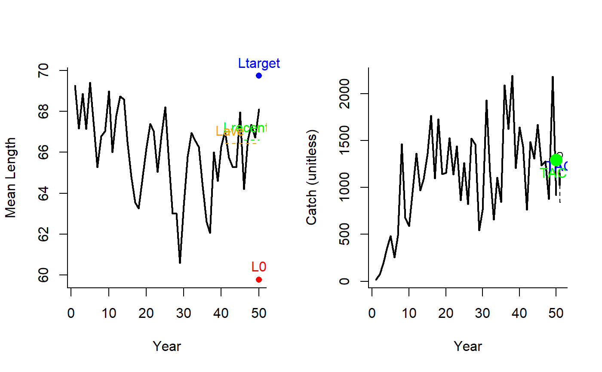
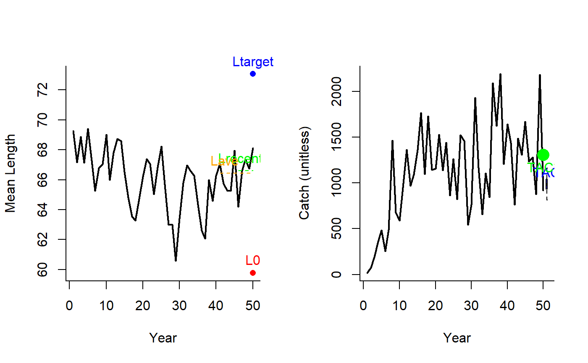
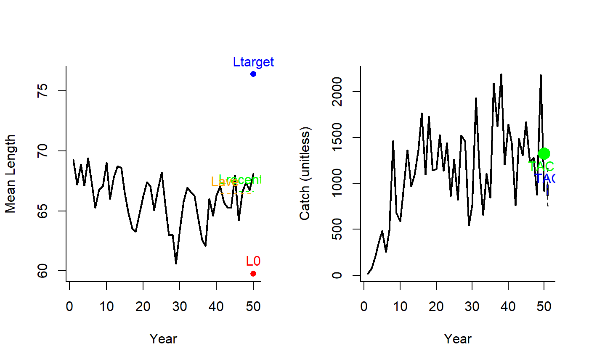
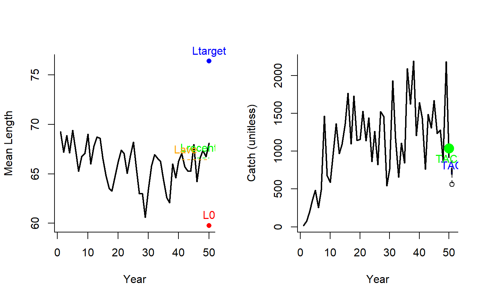
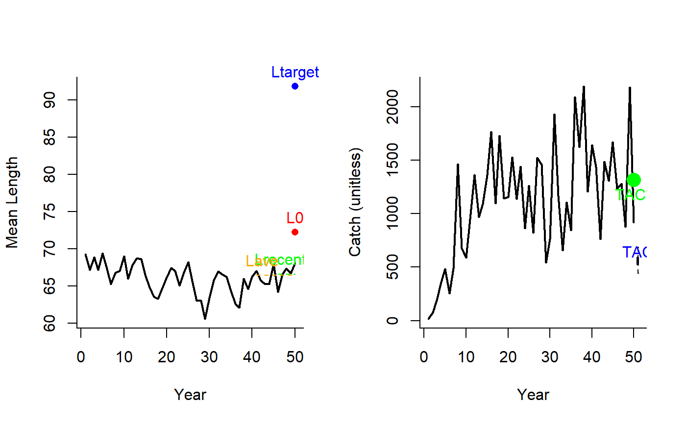

Ltarget1.RdA management procedure that incrementally adjusts the TAC to reach a target mean length in catches.
Ltarget1(x, Data, reps = 100, plot = FALSE, yrsmth = 5, xx = 0, xL = 1.05) Ltarget2(x, Data, reps = 100, plot = FALSE, yrsmth = 5, xx = 0, xL = 1.1) Ltarget3(x, Data, reps = 100, plot = FALSE, yrsmth = 5, xx = 0, xL = 1.15) Ltarget4(x, Data, reps = 100, plot = FALSE, yrsmth = 5, xx = 0.2, xL = 1.15) L95target(x, Data, reps = 100, plot = FALSE, yrsmth = 5, xx = 0, xL = 1.05)
| x | A position in a data-limited methods data object |
|---|---|
| Data | A data-limited methods data object |
| reps | The number of stochastic samples of the MP recommendation(s) |
| plot | Logical. Show the plot? |
| yrsmth | Years over which to smooth recent estimates of surplus production |
| xx | Parameter controlling the fraction of mean catch to start using in first year |
| xL | Parameter controlling the magnitude of the target mean length of catches relative to average length in catches. |
An object of class Rec with the TAC slot populated with a numeric vector of length reps
Four target length MPs proposed by Geromont and Butterworth 2014. Tested by Carruthers et al. 2015.
The TAC is calculated as:
If \(L_\textrm{recent} \geq L_0\): $$\textrm{TAC} = 0.5 \textrm{TAC}^* \left[1+\left(\frac{L_\textrm{recent}-L_0}{L_\textrm{target}-L_0}\right)\right] $$
else: $$\textrm{TAC} = 0.5 \textrm{TAC}^* \left[\frac{L_\textrm{recent}}{L_0}^2\right] $$
where \(\textrm{TAC}^*\) is (1 - xx) mean catches from the last yrsmth historical years (pre-projection),
\(L_\textrm{recent}\) is mean length in last yrmsth years, \(L_0\) is (except for L95target) 0.9 average catch in the last
2 x yrsmth historical (pre-projection years) (\(L_\textrm{ave}\)), and \(L_\textrm{target}\) is
(except for L95target) xL \(L_\textrm{ave}\).
Ltarget1: The least biologically precautionary TAC-based MP.
Ltarget2: Increasingly biologically precautionary (xL = 1.1).
Ltarget3: Increasingly biologically precautionary (xL = 1.1).
Ltarget4: The most biologically precautionary TAC-based MP (xL = 1.1, xx=0.2).
L95target: Same as Ltarget1 but here the target and limit
mean lengths are based on the length at maturity distribution rather
than an arbitrary multiplicative of the mean length
See Data for information on the Data object
Ltarget1: Cat, LHYear, ML, Year
Ltarget2: Cat, LHYear, ML, Year
Ltarget3: Cat, LHYear, ML, Year
Ltarget4: Cat, LHYear, ML, Year
L95target: Cat, L50, LHYear, ML, Year
See Online Documentation for correctly rendered equations
Carruthers et al. 2015. Performance evaluation of simple management procedures. ICES J. Mar Sci. 73, 464-482.
Geromont, H.F., Butterworth, D.S. 2014. Generic management procedures for data-poor fisheries; forecasting with few data. ICES J. Mar. Sci. doi:10.1093/icesjms/fst232
Other Length target MPs: Lratio_BHI,
LtargetE1
Ltarget1(1, Data=DLMtool::SimulatedData, plot=TRUE)#> TAC (median) #> 1768.646Ltarget2(1, Data=DLMtool::SimulatedData, plot=TRUE)#> TAC (median) #> 1590.817Ltarget3(1, Data=DLMtool::SimulatedData, plot=TRUE)#> TAC (median) #> 1484.119Ltarget4(1, Data=DLMtool::SimulatedData, plot=TRUE)#> TAC (median) #> 1187.295L95target(1, Data=DLMtool::SimulatedData, plot=TRUE)#> TAC (median) #> 1040.244